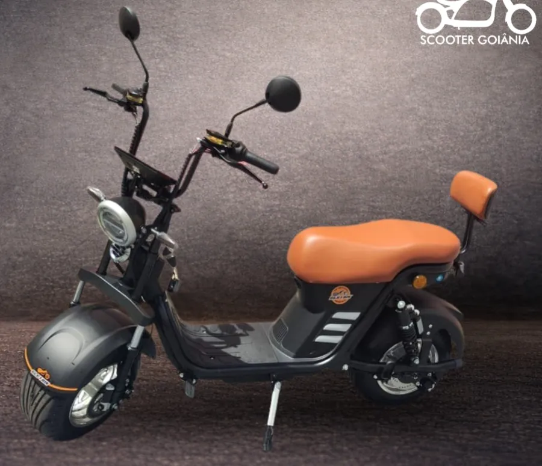
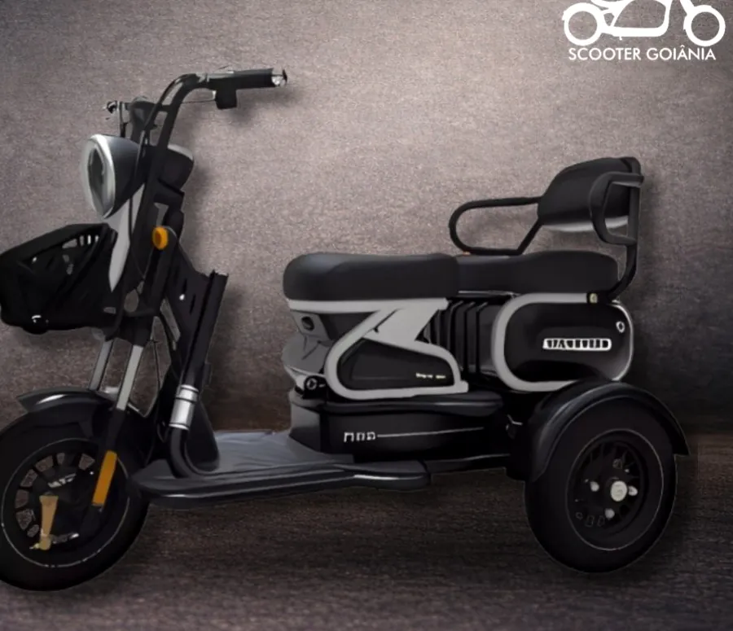

Revisão elétrica e mecânica
Avaliação dos sistemas do veículo para identificar falhas e pontos que precisam de manutenção.
Oficina Scooter Goiânia
Manutenção elétrica e mecânica para scooters, patinetes, triciclos e outros veículos elétricos, com uma equipe preparada para avaliar o problema e orientar o serviço necessário.
A oficina da Scooter Goiânia trabalha com revisão, componentes elétricos, pneus, rodas, bateria, suspensão e outros reparos.
O que está acontecendo com seu veículo?
Ruídos que não existiam, falhas na parte elétrica, bateria descarregando de forma diferente, problemas nos pneus, rodas ou suspensão são sinais de que o veículo precisa ser avaliado.
Você não precisa saber qual peça apresentou defeito para falar com a oficina. Conte o que está acontecendo e a equipe orienta como seguir.

Manutenção para diferentes partes do veículo
Avaliação dos sistemas do veículo para identificar falhas e pontos que precisam de manutenção.
Troca de módulos, instalações elétricas e serviços relacionados aos componentes elétricos do veículo.
Avaliação e substituição de bateria quando necessário, incluindo atendimento com baterias de lítio.
Serviços relacionados a pneus, rodas, desempeno, guidão, quadro e soldas.
Avaliação e serviços relacionados ao sistema de suspensão.
Bagageiro, setas, farolete, guidão, para-lama e outras modificações conforme o projeto.
Não sabe qual é o defeito?
Algumas informações já ajudam a equipe a entender o que precisa ser verificado. Se conseguir, informe também quando o problema começou e se aconteceu alguma coisa antes da falha.
Conte quando começou e se algum alerta apareceu.
Informe se a mudança foi repentina ou gradual.
Diga quanto tempo ou distância ela costuma render.
Se possível, explique de onde parece vir o som.
Descreva qualquer mudança no comportamento.
Informe qual comando ou componente parou.
Garantia
Tenha em mãos o modelo e as informações da compra. A equipe confere as condições aplicáveis ao produto e orienta você sobre como seguir com o atendimento. Os prazos e coberturas podem mudar de um modelo para outro.
Falar sobre garantia
Para começar
Você pode entrar em contato pelo WhatsApp e contar o que está acontecendo. A partir daí, nossa equipe orienta sobre a avaliação do veículo e os próximos passos para o serviço.
Informe o modelo e descreva o problema.
A equipe verifica os pontos que precisam de atenção.
Com o problema identificado, você recebe a orientação para o reparo.
Dúvidas sobre a oficina
Não. Conte o que você percebeu no funcionamento e a equipe orienta como seguir com a avaliação.
Sim. A oficina divulga serviços de revisão elétrica e mecânica para veículos elétricos.
Sim. A oficina também oferece serviço relacionado à troca de bateria de lítio.
Sim. Pneus, rodas, guidão, quadro e soldas estão entre os serviços divulgados pela oficina.
Sim. A manutenção e o suporte depois da compra são apresentados pela própria loja como parte do atendimento aos clientes.
Fale com a equipe com o modelo e os dados da compra para confirmar as condições aplicáveis antes de seguir com o reparo.
Precisa resolver um problema no seu veículo?
Precisa de manutenção, suporte depois da compra ou orientação sobre garantia? Entre em contato com a Scooter Goiânia.